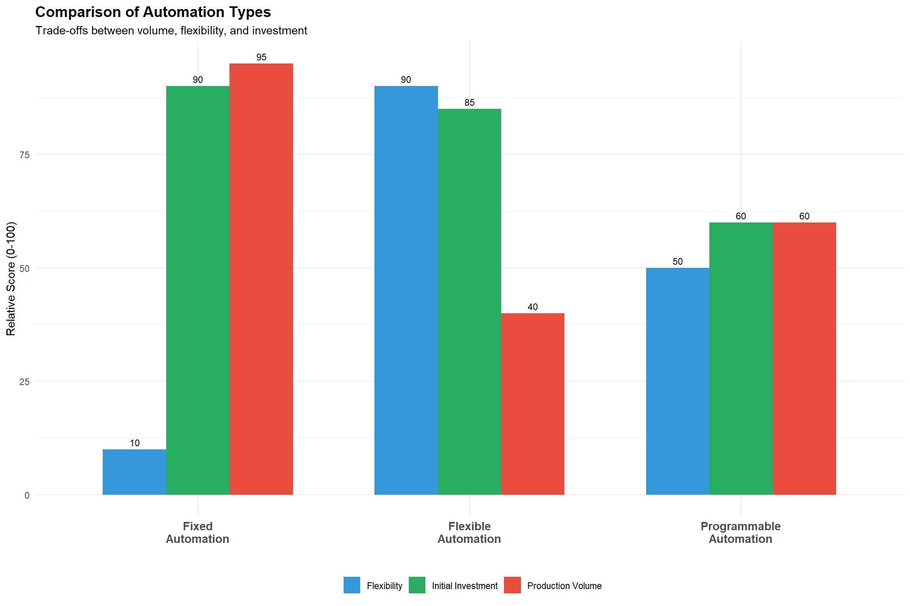
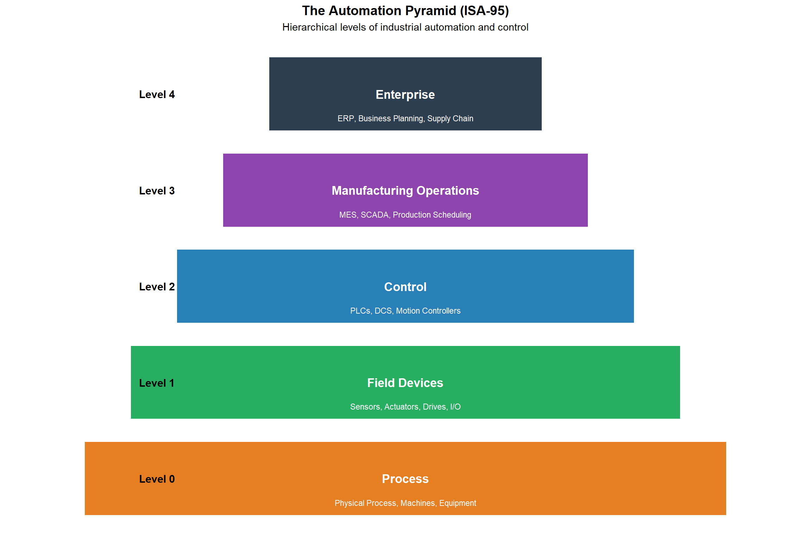
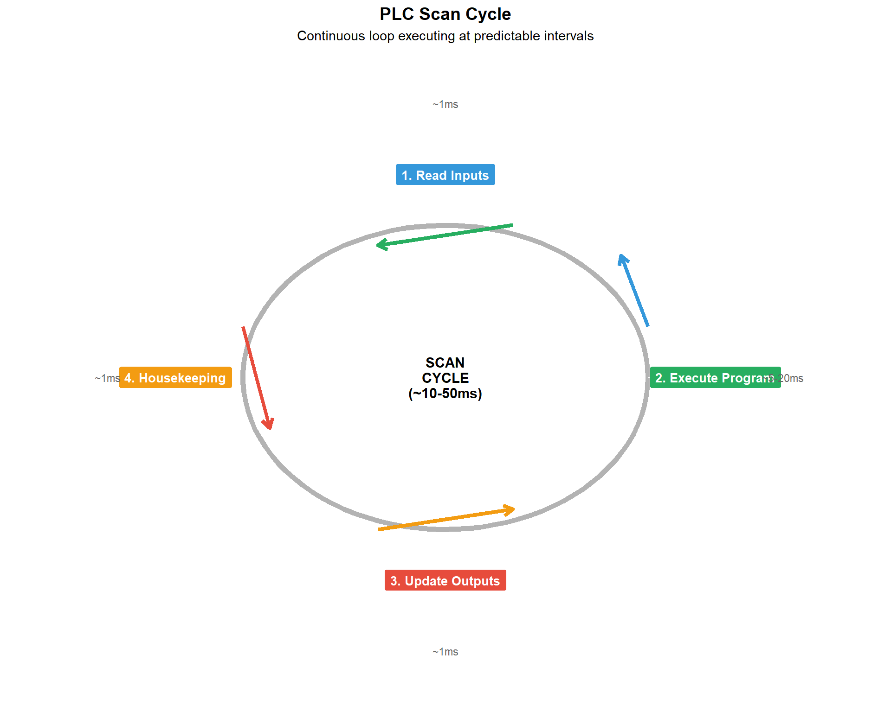
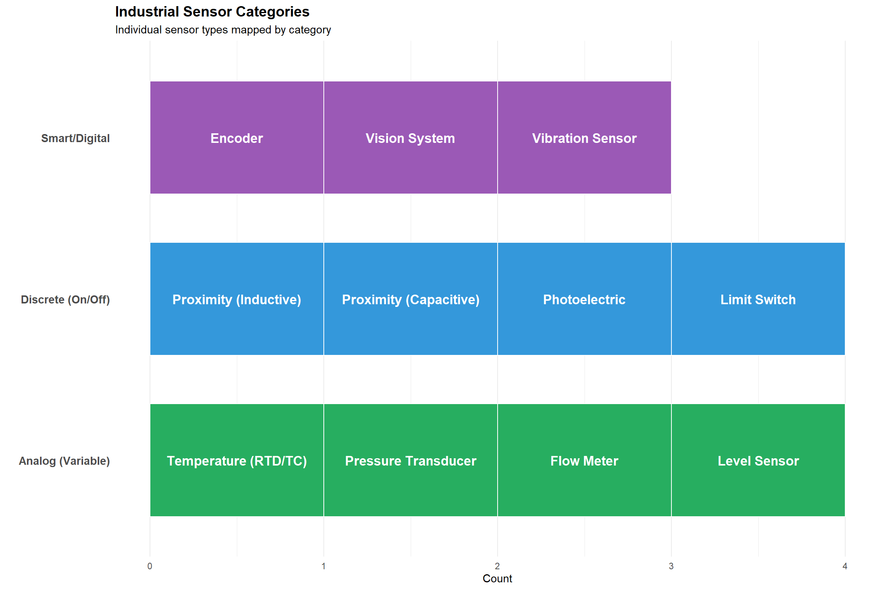
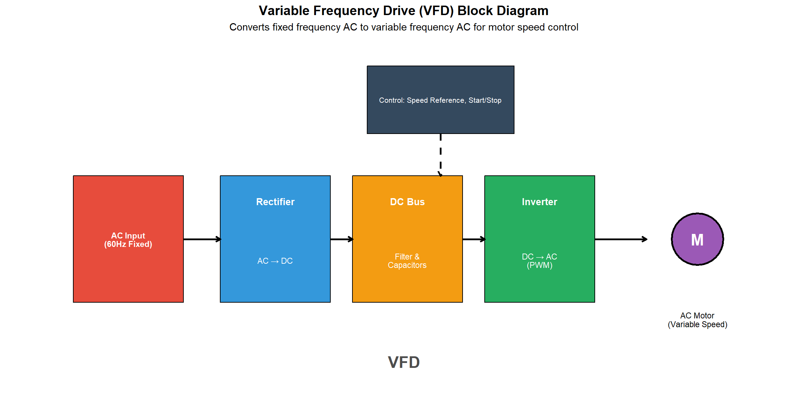
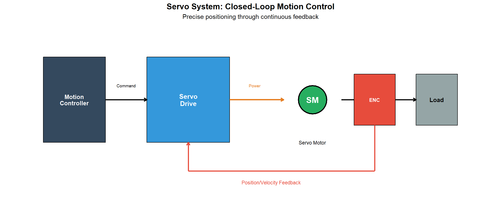
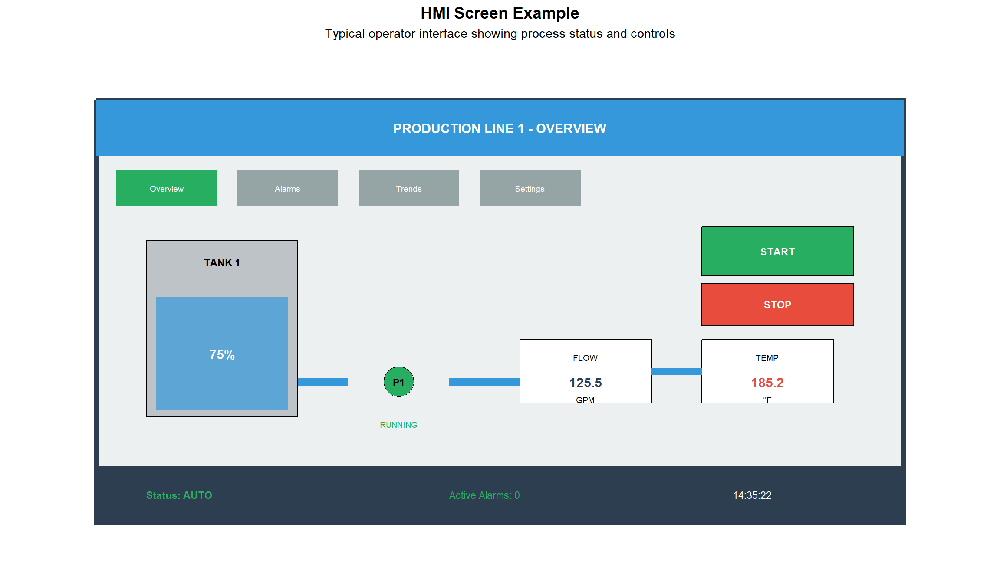

Chapter 13 Industrial Automation Fundamentals
13.1 Learning Objectives
After completing this chapter, you will be able to:
- Define industrial automation and explain its role in modern manufacturing
- Distinguish between fixed, programmable, and flexible automation
- Describe the architecture and function of Programmable Logic Controllers (PLCs)
- Identify common industrial sensors and their applications
- Explain motor control fundamentals including VFDs and servo systems
- Understand industrial communication protocols and networking
- Describe the role of HMI and SCADA in process monitoring
- Apply safety principles to automated systems
- Explain Industry 4.0 concepts and the Industrial Internet of Things (IIoT)
13.2 Introduction to Industrial Automation
Industrial automation is the use of control systems, machinery, and information technologies to handle processes and machinery in an industry, replacing human intervention where possible to increase efficiency, quality, and safety.
13.2.2 Automation in Key Industries
| Industry | Application | Technology | Benefit |
|---|---|---|---|
| Automotive | |||
| Automotive | Robotic welding and assembly | 6-axis robots, PLCs | Consistent weld quality, high speed |
| Automotive | Automated paint systems | Conveyors, spray robots | Uniform coating, reduced VOC |
| Automotive | Vision inspection | Machine vision, AI | 100% inspection, defect detection |
| Food & Beverage | |||
| Food & Beverage | Filling and packaging lines | Servo drives, sensors | High speed, accurate fill weights |
| Food & Beverage | Pasteurization control | PLCs, temperature control | Food safety, traceability |
| Food & Beverage | Sorting and grading | Vision systems, conveyors | Quality sorting, reduced labor |
| Aerospace/Defense | |||
| Aerospace/Defense | CNC precision machining | CNC, CMM integration | Tight tolerances, repeatability |
| Aerospace/Defense | Automated testing systems | Automated test equipment | Comprehensive testing, documentation |
| Aerospace/Defense | Clean room automation | Robotics, HEPA systems | Contamination control, precision |
13.3 Types of Automation
Industrial automation systems can be classified based on their flexibility and programming capability.
13.3.1 Automation Classification

| Fixed Automation | Programmable Automation | Flexible Automation | |
|---|---|---|---|
| Definition | Hard-wired, dedicated equipment for single product | Equipment can be reprogrammed for different products | Rapid changeover with minimal downtime |
| Product Variety | Single product or very similar variants | Batches of different products | High variety, even mixed on same line |
| Production Volume | Very high (millions of units) | Medium to high | Low to medium |
| Changeover | Difficult, expensive, time-consuming | Requires reprogramming and setup; hours to days | Quick, often automatic; minutes |
| Initial Investment | Very high | High | Very high |
| Unit Cost | Very low per unit | Medium | Higher per unit, but flexible |
| Typical Equipment | Transfer lines, dedicated assembly machines | CNC machines, PLCs, industrial robots | FMS, robotic cells, AGVs |
| Best For | Automotive components, fasteners, bottles | Batch manufacturing, job shops | Aerospace, custom manufacturing |
13.3.2 The Automation Pyramid

Understanding the Pyramid Levels
Level 0 - Process: The actual physical equipment, machines, and processes being controlled. This includes conveyors, motors, valves, tanks, and the product being manufactured.
Level 1 - Field Devices: Sensors that measure process variables (temperature, pressure, flow, position) and actuators that affect the process (motors, valves, solenoids, drives).
Level 2 - Control: The “brain” of automation - PLCs, DCS, and motion controllers that execute control logic, process sensor inputs, and command actuators. Also includes HMI for operator interaction.
Level 3 - Manufacturing Operations: MES (Manufacturing Execution Systems), SCADA, production scheduling, quality management, and maintenance management. Bridges plant floor and business systems.
Level 4 - Enterprise: ERP systems, business intelligence, supply chain management, financial systems. Makes business decisions based on plant floor data.
Key Principle: Data flows up (process information), commands flow down (control directives).13.4 Programmable Logic Controllers (PLCs)
The PLC (Programmable Logic Controller) is the workhorse of industrial automation, providing reliable, real-time control of machines and processes.

13.4.2 PLC Hardware Components
| Component | Function | Specifications |
|---|---|---|
| CPU (Processor) | Executes the control program, manages memory, coordinates all modules | Scan time (ms), memory size (KB/MB), I/O capacity |
| Power Supply | Converts AC power to DC voltages required by PLC components | Input voltage (120/240 VAC), output power (watts) |
| Input Modules | Interface field devices (sensors, switches) to CPU; converts signals to digital | Digital (24VDC, 120VAC) or Analog (4-20mA, 0-10V) |
| Output Modules | Interface CPU to field devices (motors, valves); converts digital to power signals | Digital (relay, transistor) or Analog (4-20mA, 0-10V) |
| Communication Modules | Enable networking: Ethernet/IP, Profinet, Modbus, DeviceNet | Protocol, speed (Mbps), ports |
| Programming Device | Laptop/PC with programming software for creating and downloading programs | Software: RSLogix, TIA Portal, GX Works |
13.4.3 The PLC Scan Cycle
PLCs operate in a continuous scan cycle:

# Scan Time Calculation Example
input_scan_time <- 1.2 # ms
program_execution <- 15.5 # ms (depends on program size)
output_update <- 1.0 # ms
housekeeping <- 2.3 # ms
total_scan_time <- input_scan_time + program_execution + output_update + housekeeping
cat("PLC Scan Time Calculation:\n")## PLC Scan Time Calculation:## ─────────────────────────────## Input Scan: 1.2 ms## Program Execution: 15.5 ms## Output Update: 1 ms## Housekeeping: 2.3 ms## ─────────────────────────────## Total Scan Time: 20 ms##
## Scans per second: 5013.4.4 PLC Programming Languages (IEC 61131-3)
| Language | Type | Description | Best For |
|---|---|---|---|
| Ladder Diagram (LD) | Graphical | Resembles electrical relay circuits; most common in discrete manufacturing | Boolean logic, interlocks, machine control |
| Function Block Diagram (FBD) | Graphical | Uses function blocks connected by lines; good for analog/process control | PID loops, motion control, data manipulation |
| Structured Text (ST) | Textual | High-level language similar to Pascal; powerful for complex calculations | Math operations, data handling, complex algorithms |
| Instruction List (IL) | Textual | Low-level assembly-like language; rarely used today | Legacy systems, compact code |
| Sequential Function Chart (SFC) | Graphical | Sequence/state-based programming; excellent for batch processes | Sequential operations, batch control, recipes |
13.4.5 Ladder Logic Example

How the Start/Stop Circuit Works
Rung 1 - Motor Control: 1. Power flows from L1 through the NC (Normally Closed) STOP button 2. If STOP is pressed, the circuit breaks and motor stops 3. START is NO (Normally Open) - pressing it allows power to flow to the MOTOR coil 4. When MOTOR energizes, its NO contact in the parallel branch closes 5. This “seals in” the circuit - motor stays running even after START is released 6. To stop, press STOP which breaks the seal-in circuit
Rung 2 - Run Indicator: 1. When MOTOR coil is energized, the MOTOR contact closes 2. This allows power to flow to the RUN LIGHT output 3. Light is ON whenever motor is running
This is called a “3-wire control” circuit - it provides: - Low voltage release protection (motor won’t restart after power failure) - Maintained contact operation (don’t need to hold START button)13.5 Industrial Sensors
Sensors are the “eyes and ears” of automation systems, providing feedback about the process to the control system.
13.5.1 Sensor Classification

| Sensor | Principle | Range | Advantages |
|---|---|---|---|
| Inductive Proximity | Eddy current change in oscillating field | 2-40mm typical | Durable, no contact, metal detection |
| Capacitive Proximity | Capacitance change with target approach | 2-25mm typical | Detects any material, through walls |
| Photoelectric | Light beam interrupted or reflected | 0.1-30m | Long range, versatile |
| RTD (PT100) | Resistance changes with temperature | -200 to 850°C | Accurate, stable, linear |
| Thermocouple | Voltage generated at junction of dissimilar metals | -200 to 2300°C | Wide range, fast response |
| Pressure Transducer | Diaphragm deflection converted to electrical signal | 0-10000 psi | Accurate, wide range |
| Incremental Encoder | Optical/magnetic pulses per revolution | 100-10000 PPR | Simple, low cost, high resolution |
| Absolute Encoder | Unique code for each position | 12-25 bit | Position known at power-up |

13.6 Actuators and Motor Control
Actuators convert control signals into physical motion or action.
13.6.1 Types of Industrial Actuators
| Category | Type | Application | Control | Characteristics |
|---|---|---|---|---|
| Electric | ||||
| Electric Motors | AC Induction Motor | Conveyors, pumps, fans, compressors | VFD for variable speed | Robust, low cost, high power |
| Electric Motors | Servo Motor | Precise positioning, robotics, CNC | Servo drive with feedback | High precision, dynamic response |
| Electric Motors | Stepper Motor | Indexing, low-speed positioning | Stepper drive (open or closed loop) | Simple control, holds position |
| Electric Motors | DC Motor | Battery vehicles, legacy systems | PWM, SCR drive | Easy speed control |
| Pneumatic | ||||
| Pneumatic | Cylinder | Clamping, pushing, lifting | Solenoid valves, proportional valves | Fast, clean, moderate force |
| Pneumatic | Rotary Actuator | Rotating grippers, indexing | Solenoid valves | Compact, clean |
| Hydraulic | ||||
| Hydraulic | Cylinder | Heavy lifting, presses | Proportional/servo valves | Very high force, smooth |
| Hydraulic | Motor | Heavy machinery, mobile equipment | Proportional/servo valves | High power density |
13.6.2 Variable Frequency Drives (VFDs)
A Variable Frequency Drive (VFD) controls AC motor speed by varying the frequency and voltage of the power supplied to the motor.

# VFD Speed and Torque Calculations
# Motor nameplate data
motor_hp <- 10
poles <- 4
rated_voltage <- 460 # V
rated_frequency <- 60 # Hz
rated_rpm <- 1750
slip_rpm <- (120 * rated_frequency / poles) - rated_rpm
# Synchronous speed at rated frequency
sync_speed_60 <- 120 * rated_frequency / poles
cat("Motor Data:\n")## Motor Data:## Synchronous speed at 60Hz: 1800 RPM## Rated speed: 1750 RPM## Slip: 50 RPM ( 2.8 %)# Calculate speed at different frequencies
frequencies <- c(15, 30, 45, 60, 75)
speeds <- sapply(frequencies, function(f) {
sync <- 120 * f / poles
sync - slip_rpm # Assuming constant slip (approximation)
})
cat("Speed vs Frequency (V/Hz mode):\n")## Speed vs Frequency (V/Hz mode):## ─────────────────────────────## 15 Hz: 400 RPM
## 30 Hz: 850 RPM
## 45 Hz: 1300 RPM
## 60 Hz: 1750 RPM
## 75 Hz: 2200 RPM# V/Hz ratio
vhz_ratio <- rated_voltage / rated_frequency
cat("\nV/Hz Ratio:", round(vhz_ratio, 2), "V/Hz\n")##
## V/Hz Ratio: 7.67 V/Hz## At 30Hz, voltage should be: 230 V13.6.3 VFD Benefits
| Benefit | Description | Typical Impact |
|---|---|---|
| Energy Savings | Match motor speed to load requirements; huge savings on fans/pumps | 20-50% energy reduction |
| Soft Start/Stop | Ramp up/down gradually; eliminates inrush current (6-8x normal) | Reduced electrical stress |
| Speed Control | Precise speed control from 0-100%+ of base speed | N/A |
| Process Control | Maintain constant pressure, flow, or tension | Improved quality |
| Reduced Mechanical Stress | Reduced wear on belts, gears, couplings from smooth acceleration | Extended equipment life |
| Power Factor | VFD presents near-unity power factor to supply | Avoid PF penalties |
13.6.4 Servo Systems

| Characteristic | VFD + Induction Motor | Servo System |
|---|---|---|
| Control Type | Open loop (usually) | Closed loop (always) |
| Feedback | Optional encoder | High-resolution encoder required |
| Positioning Accuracy | ±1-5% of speed | ±0.01° or better |
| Dynamic Response | Moderate (100-500ms) | Fast (1-10ms) |
| Torque at Zero Speed | Limited (10-20%) | 100% continuous |
| Cost | Lower ($500-5000) | Higher ($2000-20000) |
| Typical Application | Fans, pumps, conveyors | Robotics, CNC, packaging |
13.7 Industrial Communication Networks
Modern automation systems rely on communication networks to connect devices, share data, and enable coordinated control.

13.7.2 Common Industrial Protocols
| Protocol | Developer | Medium | Speed | Application |
|---|---|---|---|---|
| Ethernet/IP | ODVA (Rockwell) | Ethernet | 100Mbps/1Gbps | General automation, I/O, drives |
| PROFINET | PI (Siemens) | Ethernet | 100Mbps/1Gbps | Siemens ecosystem, motion |
| Modbus TCP | Modicon/Schneider | Ethernet | 100Mbps | Simple, open, legacy systems |
| EtherCAT | Beckhoff | Ethernet | 100Mbps | High-speed motion, precision |
| DeviceNet | ODVA | CAN-based | 500kbps | I/O, drives (legacy) |
| PROFIBUS | PI (Siemens) | RS-485 | 12Mbps | I/O, drives (legacy) |
| IO-Link | IO-Link Consortium | Point-to-point | 230.4kbps | Smart sensors |
| OPC UA | OPC Foundation | Ethernet/Any | Varies | IT/OT integration, IIoT |
Protocol Selection Guide
Choose Ethernet/IP if: - Using Allen-Bradley/Rockwell equipment - Need general-purpose industrial Ethernet - Require seamless integration with IT networks
Choose PROFINET if: - Using Siemens equipment - Need deterministic communication for motion control - Require IRT (Isochronous Real-Time) performance
Choose EtherCAT if: - Need highest speed/lowest latency - High-precision motion control - Many axes of coordinated motion
Choose Modbus TCP if: - Simple, low-cost solution needed - Connecting legacy equipment - Open protocol preference (no licensing)
Choose OPC UA if: - Need IT/OT convergence - IIoT/Industry 4.0 implementation - Secure, platform-independent communication13.8 Human-Machine Interface (HMI) and SCADA
13.8.1 HMI Overview
An HMI (Human-Machine Interface) provides operators with a visual interface to monitor and control automated processes.

13.8.2 HMI Design Best Practices
| Principle | Best Practice | Avoid |
|---|---|---|
| Situational Awareness | Show abnormal conditions prominently; operator should know status at a glance | Everything same color; too much detail |
| Alarm Management | Prioritize alarms (critical/warning/info); avoid alarm floods; require acknowledgment | Hundreds of unacknowledged alarms |
| Navigation | Consistent layout; max 3 clicks to any screen; clear hierarchy | Inconsistent button placement |
| Color Usage | Use color sparingly for meaning; gray for normal; avoid red/green for critical info (colorblind) | Rainbow colors everywhere |
| Data Display | Show trends, not just values; use appropriate precision; include units | Too many decimal places; no context |
| Controls | Confirm destructive actions; use interlocks; provide feedback | No confirmation for critical commands |
13.8.3 SCADA Systems
SCADA (Supervisory Control and Data Acquisition) systems provide centralized monitoring and control across multiple locations or processes.
| Component | Function | Example |
|---|---|---|
| MTU (Master Terminal Unit) | Central server running SCADA software; processes data, executes logic | Wonderware, Ignition, FactoryTalk |
| RTU (Remote Terminal Unit) | Field device that collects data from sensors and sends to MTU | PLC, dedicated RTU hardware |
| Communication Network | Links MTU to RTUs; can be radio, cellular, satellite, fiber | Modbus, DNP3, IEC 61850 |
| HMI/Workstations | Operator interface for monitoring and control | PC workstations, web clients |
| Historian Database | Stores historical process data for trending and analysis | SQL database, OSIsoft PI |
| Alarm Server | Manages alarm generation, notification, and logging | Built into SCADA or separate |
13.9 Safety in Automation
Safety is paramount in automated systems. Safety systems protect personnel and equipment from harm.
13.9.2 Safety Integrity Levels (SIL)
| SIL Level | PFD (avg) | Risk Reduction Factor | Risk Level | Example Application |
|---|---|---|---|---|
| SIL 1 | ≥10⁻² to <10⁻¹ | 10-100 | Minor injury possible; first line of defense | Warning systems, non-critical interlocks |
| SIL 2 | ≥10⁻³ to <10⁻² | 100-1,000 | Serious injury possible; general industrial | Machine guarding, general process safety |
| SIL 3 | ≥10⁻⁴ to <10⁻³ | 1,000-10,000 | Death or severe injury; process industry standard | Emergency shutdown, burner management |
| SIL 4 | ≥10⁻⁵ to <10⁻⁴ | 10,000-100,000 | Catastrophic; nuclear, aviation | Nuclear reactor protection (rarely used in manufacturing) |
13.10 Industry 4.0 and IIoT
Industry 4.0 represents the fourth industrial revolution, characterized by the integration of digital technologies into manufacturing.

13.10.2 IIoT Architecture
| Layer | Components | Function | Examples |
|---|---|---|---|
| Edge/Device Layer | Sensors, actuators, PLCs, gateways, edge devices | Collect data, local processing, protocol conversion | Vibration sensor, smart valve, edge computer |
| Network Layer | Industrial Ethernet, Wi-Fi, 5G, LoRaWAN, MQTT | Secure data transport, connectivity | Cisco switches, AWS IoT Core, Kepware |
| Platform Layer | Cloud/on-premise servers, databases, data lakes | Store, process, and manage data at scale | Azure IoT Hub, AWS, Ignition |
| Application Layer | Analytics dashboards, AI/ML models, business applications | Derive insights, optimize operations, enable decisions | Power BI, TensorFlow, custom apps |
13.10.3 Predictive Maintenance Example
# Simulating predictive maintenance with vibration data
set.seed(42)
# Generate 30 days of vibration readings
days <- 1:30
baseline_vibration <- 2.5 # mm/s RMS (normal)
# Simulate gradual bearing degradation
vibration <- baseline_vibration +
0.05 * days + # Gradual increase
0.5 * exp((days - 25)/5) * (days > 20) + # Accelerating failure
rnorm(30, 0, 0.2) # Normal variation
# Alert thresholds
warning_threshold <- 4.0
alarm_threshold <- 6.0
# Find when thresholds crossed
warning_day <- min(which(vibration > warning_threshold))
alarm_day <- min(which(vibration > alarm_threshold))## Warning in min(which(vibration > alarm_threshold)): no non-missing arguments to
## min; returning Inf## Predictive Maintenance Analysis:## ─────────────────────────────────## Baseline vibration: 2.5 mm/s RMS## Warning threshold: 4 mm/s RMS## Alarm threshold: 6 mm/s RMS## Warning triggered on day: 24## Alarm triggered on day: Inf## Days of warning before alarm: Inf##
## Recommendation: Schedule bearing replacement before day Inf
13.12 Summary
Industrial automation integrates multiple technologies to improve manufacturing efficiency, quality, and safety:
- Automation types range from fixed (high-volume, single product) to flexible (low-volume, high variety)
- PLCs are the workhorses of industrial control, using scan cycles to process inputs and control outputs
- Sensors provide feedback on process conditions (discrete, analog, and smart)
- Motor control through VFDs and servo systems enables precise speed and position control
- Industrial networks connect devices using protocols like Ethernet/IP, PROFINET, and Modbus
- HMI and SCADA provide operator interface for monitoring and control
- Safety systems use dedicated controllers and devices to protect personnel
- Industry 4.0 brings IIoT, cloud computing, and AI to enable smart manufacturing
13.13 Review Questions
Question 1: Compare and contrast fixed, programmable, and flexible automation. Give an example application for each.
Answer:
| Aspect | Fixed | Programmable | Flexible |
|---|---|---|---|
| Product variety | Single product | Batches of different products | High variety, mixed production |
| Volume | Very high | Medium-high | Low-medium |
| Changeover | Difficult, expensive | Hours to days | Minutes |
| Investment | Very high | High | Very high |
| Flexibility | None | Limited | High |
Examples:
- Fixed Automation: Automotive transfer line producing engine blocks
- Same machining operations repeated millions of times
- Dedicated stations optimized for specific operations
- Changing product would require complete retooling
- Programmable Automation: CNC machining job shop
- Different parts programmed and run in batches
- Significant setup time between batches
- Equipment reprogrammable but not instantaneous
- Flexible Automation: Robotic welding cell in aerospace
- Different assemblies run with quick changeover
- Robot program changes automatically based on part ID
- Same cell handles multiple product variants
Question 2: Explain the PLC scan cycle and why scan time is important.
Answer:
The PLC Scan Cycle consists of four main phases executed continuously:
- Input Scan (~1ms): Read all physical inputs and store values in the input image table
- Program Execution (~5-20ms): Execute the user program (ladder logic, etc.) using input image data
- Output Update (~1ms): Write output image table values to physical outputs
- Housekeeping (~1-3ms): Communications, diagnostics, self-testing
Total scan time = Sum of all phases, typically 10-50ms
Why Scan Time Matters:
Response Time: An input change isn’t acted upon until the next scan completes. If scan time is 50ms, worst-case response time is 50ms.
Safety: Fast-moving machinery requires short scan times for safety functions. A 100ms scan time with a motor at 1800 RPM means 3 shaft revolutions between scans.
Application Limits:
- Motion control may need <1ms scan times (special motion PLCs)
- High-speed counting needs special modules
- Safety PLCs have guaranteed maximum scan times
Program Size Impact: Larger programs take longer to execute, increasing scan time. Optimization may be needed for time-critical applications.
Communication Delays: Network updates typically happen once per scan, affecting data freshness.
Question 3: What are the key differences between PNP and NPN sensor outputs? When would you use each?
Answer:
PNP (Sourcing): - Sensor output sources current TO the load - When activated, output connects to +V - Load is connected between sensor output and 0V - Current flows: +V → Sensor → Output → Load → 0V - Common in North America and Europe
NPN (Sinking): - Sensor output sinks current FROM the load - When activated, output connects to 0V (ground) - Load is connected between sensor output and +V - Current flows: +V → Load → Output → Sensor → 0V - Common in Asia (Japan)
Selection Criteria:
- PLC Input Type:
- Sinking PLC inputs work with PNP (sourcing) sensors
- Sourcing PLC inputs work with NPN (sinking) sensors
- Regional Standards:
- North America: PNP is standard
- Europe: PNP is standard
- Japan/Asia: NPN is common
- Safety Considerations:
- PNP: A ground fault can cause false ON signal
- NPN: A ground fault typically causes safe-off condition
- For safety applications, consider sensor design carefully
- Existing Infrastructure:
- Match new sensors to existing system type
- Converting between types requires different PLC input cards
Question 4: A VFD is controlling a 10 HP, 4-pole motor rated at 1750 RPM and 460V at 60Hz. Calculate the motor speed at 30Hz and 45Hz. What voltage should the VFD supply at these frequencies?
Answer:
# Motor parameters
poles <- 4
rated_voltage <- 460 # V
rated_frequency <- 60 # Hz
rated_rpm <- 1750
# Calculate synchronous speed and slip at rated conditions
sync_speed_60 <- 120 * rated_frequency / poles
slip_rpm <- sync_speed_60 - rated_rpm
slip_percent <- (slip_rpm / sync_speed_60) * 100
cat("Motor Analysis:\n")## Motor Analysis:## Synchronous speed at 60Hz: 1800 RPM## Rated speed: 1750 RPM## Slip: 50 RPM ( 2.8 %)# V/Hz ratio
vhz_ratio <- rated_voltage / rated_frequency
cat("V/Hz Ratio:", round(vhz_ratio, 2), "V/Hz\n\n")## V/Hz Ratio: 7.67 V/Hz# Calculate at 30Hz
freq_30 <- 30
sync_30 <- 120 * freq_30 / poles
speed_30 <- sync_30 - slip_rpm # Assuming constant slip in RPM
voltage_30 <- freq_30 * vhz_ratio
cat("At 30Hz:\n")## At 30Hz:## Synchronous speed: 900 RPM## Motor speed (approx): 850 RPM## VFD output voltage: 230 V# Calculate at 45Hz
freq_45 <- 45
sync_45 <- 120 * freq_45 / poles
speed_45 <- sync_45 - slip_rpm
voltage_45 <- freq_45 * vhz_ratio
cat("At 45Hz:\n")## At 45Hz:## Synchronous speed: 1350 RPM## Motor speed (approx): 1300 RPM## VFD output voltage: 345 VQuestion 5: Compare Ethernet/IP and PROFINET. When would you choose each?
Answer:
| Feature | Ethernet/IP | PROFINET |
|---|---|---|
| Developer | ODVA (Rockwell Automation) | PROFIBUS International (Siemens) |
| Base Protocol | CIP over TCP/UDP | Based on standard Ethernet |
| Real-time | CIP Motion for motion control | IRT (Isochronous Real-Time) |
| Determinism | Standard: non-deterministic; CIP Sync: deterministic | RT: soft real-time; IRT: hard real-time |
| Typical Cycle | 2-10ms (standard); <1ms (CIP Motion) | 1-10ms (RT); <1ms (IRT) |
| Ecosystem | Allen-Bradley, DeviceNet-heritage | Siemens, PROFIBUS-heritage |
Choose Ethernet/IP when: - Using Allen-Bradley/Rockwell PLCs - Integrating with DeviceNet legacy systems - Standard industrial Ethernet needs - North American installations (common) - Need CIP protocol compatibility
Choose PROFINET when: - Using Siemens PLCs (S7-1200, S7-1500) - Migrating from PROFIBUS installations - Need IRT for high-performance motion - European installations (common) - Require I-Device functionality
General Guidance: - Match the protocol to your PLC vendor’s ecosystem - Both are capable industrial Ethernet solutions - Consider existing infrastructure and expertise - For motion, evaluate specific timing requirementsQuestion 6: What is the difference between HMI and SCADA? Where would each be used?
Answer:
HMI (Human-Machine Interface): - Local operator interface for a single machine or process - Typically a touchscreen panel mounted on or near equipment - Communicates directly with one or few PLCs - Provides real-time control and monitoring - Limited data storage (trends, alarms) - Examples: Allen-Bradley PanelView, Siemens Comfort Panel
SCADA (Supervisory Control and Data Acquisition): - Centralized system monitoring multiple processes/locations - Server-based architecture with multiple client workstations - Communicates with many PLCs/RTUs across large distances - Supervisory control - high-level commands, not direct control - Extensive historical data collection and analysis - Examples: Wonderware, Ignition, FactoryTalk View SE
Where Each is Used:
| Application | HMI | SCADA |
|---|---|---|
| Single CNC machine | ✓ | |
| Packaging line | ✓ | |
| Entire factory floor | ✓ | |
| Water treatment plant | ✓ (local) | ✓ (central) |
| Oil pipeline network | ✓ | |
| Building automation | ✓ (per zone) | ✓ (campus-wide) |
| Power grid | ✓ |
Question 7: Explain what SIL 3 means and give an example of a SIL 3 application.
Answer:
SIL 3 (Safety Integrity Level 3) is defined in IEC 61508 and represents:
- PFD (Probability of Failure on Demand): 10⁻⁴ to 10⁻³ (0.01% to 0.1%)
- Risk Reduction Factor: 1,000 to 10,000
- Availability: 99.9% to 99.99%
What SIL 3 Means: - The safety function will fail to operate when needed less than 1 in 1,000 demands - Requires redundant architecture (typically 2oo3 or 1oo2D) - Requires certified safety-rated components - Requires rigorous design, testing, and validation processes - Requires regular proof testing and maintenance
SIL 3 Requirements: - Hardware fault tolerance ≥ 1 (single fault won’t cause dangerous failure) - Safe Failure Fraction > 90% (for Type A components) - Systematic capability rating of SC3 - Extensive documentation and lifecycle management
SIL 3 Application Examples:
- Emergency Shutdown System (ESD) in oil refinery
- Detects dangerous conditions (high pressure, fire)
- Shuts down process and isolates fuel sources
- Failure could result in explosion and fatalities
- Burner Management System (BMS)
- Controls furnace/boiler ignition sequence
- Monitors flame presence and fuel/air ratio
- Prevents furnace explosions
- High Integrity Pressure Protection System (HIPPS)
- Prevents overpressure in pipelines
- Isolates high-pressure source before relief valve capacity exceeded
- Protects against catastrophic pipeline rupture
Question 8: Describe three benefits of implementing IIoT in a manufacturing facility and give a specific example of each.
Answer:
1. Predictive Maintenance
Benefit: Detect equipment degradation before failure, enabling planned maintenance during scheduled downtime rather than emergency repairs.
Example: Vibration sensors on a conveyor gearbox transmit data to cloud analytics. Machine learning algorithms detect bearing wear signature 3 weeks before expected failure. Maintenance schedules replacement during next planned shutdown, avoiding $50,000 in lost production from unplanned downtime.
2. Real-Time Production Visibility
Benefit: Instant access to production metrics, OEE, and quality data from anywhere, enabling faster decision-making.
Example: Dashboard shows real-time OEE for all production lines on plant manager’s tablet. Sudden drop in Line 3 performance triggers alert. Investigation reveals material feed issue; corrected within 30 minutes instead of waiting for end-of-shift report.
3. Energy Optimization
Benefit: Monitor energy consumption at machine level, identify waste, and optimize based on production schedule.
Example: Power meters on each machine report to central system. Analysis reveals HVAC in unused areas runs at full capacity during weekends. Automated scheduling reduces weekend HVAC operation, saving 15% on energy bills ($30,000/year).
Additional Benefits:
- Quality Traceability - Every part traced through production with complete process data
- Remote Monitoring - Engineers can diagnose issues without traveling to site
- Supply Chain Integration - Real-time inventory and production data shared with suppliers
13.14 References
Bolton, W. (2015). Programmable Logic Controllers (6th ed.). Newnes.
Petruzella, F.D. (2017). Programmable Logic Controllers (5th ed.). McGraw-Hill Education.
Rehg, J.A., & Sartori, G.J. (2013). Industrial Electronics. Pearson.
IEC 61131-3:2013. Programmable Controllers - Part 3: Programming Languages.
IEC 61508:2010. Functional Safety of Electrical/Electronic/Programmable Electronic Safety-related Systems.
ODVA. (2020). The CIP Networks Library. ODVA, Inc.
Siemens AG. (2019). PROFINET System Description. Siemens.
Gilchrist, A. (2016). Industry 4.0: The Industrial Internet of Things. Apress.
ISA-95/IEC 62264. Enterprise-Control System Integration.
Groover, M.P. (2016). Automation, Production Systems, and Computer-Integrated Manufacturing (4th ed.). Pearson.